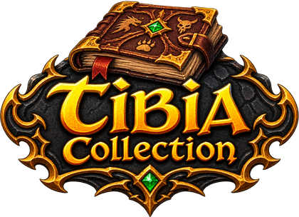

Buscar montaria
Tibia Collection: fã-site sem vínculo com a CipSoft. Dados: TibiaWiki (tibia.fandom.com e tibiawiki.com.br). Visual baseado em tibia.com (CipSoft GmbH).
Atualize os dados com
python coletar_montarias.py
.